Tue 9/21 — Depart Seattle
Turkish Airlines TK204, SEA → IST, business class on a Miles&Smiles award. Overnight in the air.
Hagia Sophia's dome and the Grand Bazaar's stalls, then caldera views and sunset sailing in Santorini, then a last couple of days with the Acropolis and Plaka in Athens. Alaska's new Seattle–Athens nonstop is what put this on the list at all; the outbound into Istanbul rides Turkish Airlines business class on a Miles&Smiles award. 10 nights on the ground across three cities, 12 days door-to-door (Tue 9/21 – Sat 10/2, 2027).
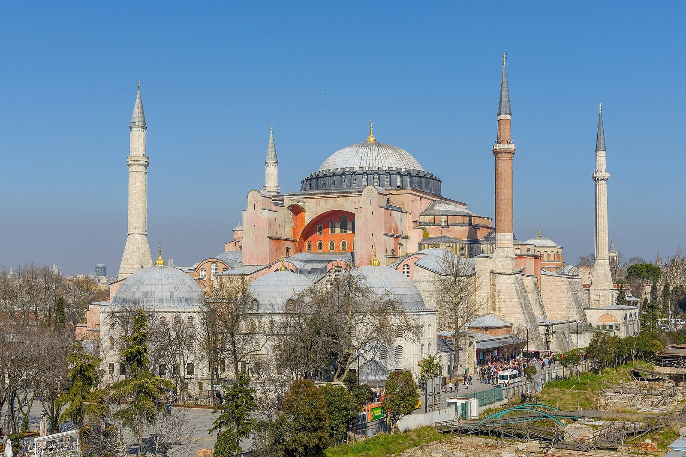
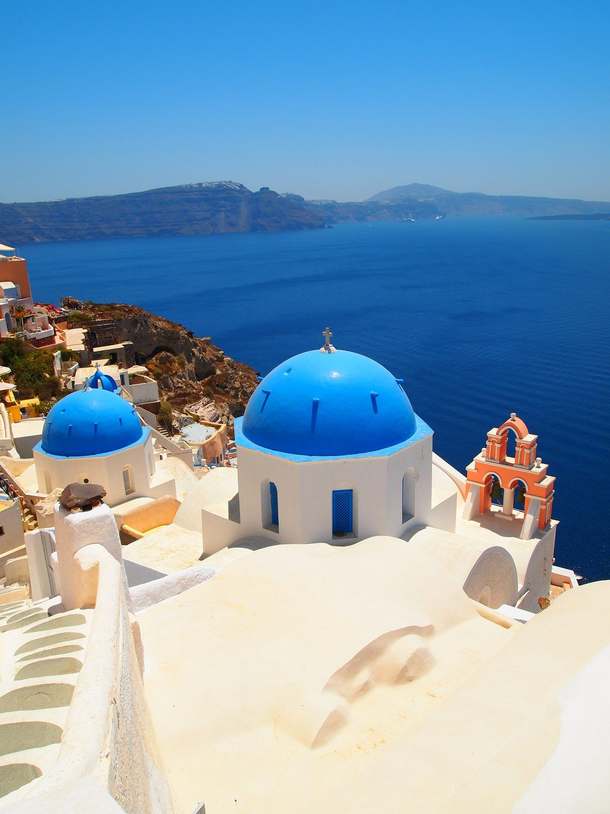
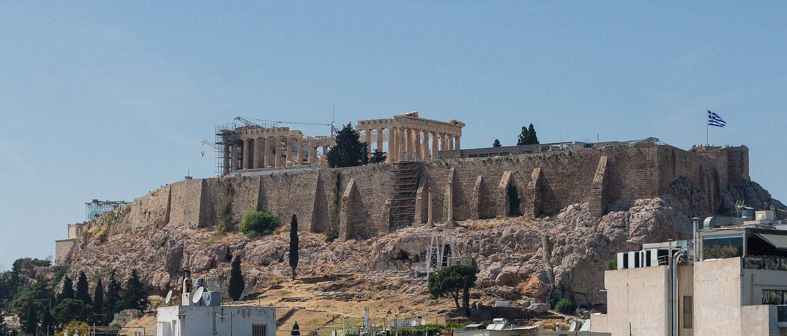
These dates: Tue Sep 21 – Sat Oct 2, 2027 — warm, thinner crowds, and locked in by Alaska's new seasonal route on the way home.
Peak: July–August (Aegean high season — hottest, most crowded, priciest; also hotter and more humid in Istanbul).
The Istanbul→Santorini leg is the one piece that isn't locked down — direct seasonal service exists but isn't confirmed for this exact date. See Flight Info.
4 nights at Hotel Amira in the Old City (~$180/night) + 4 nights at Aqua Luxury Suites in Imerovigli (~$450/night) + 2 nights at AthensWas (~$375/night) runs lodging to about $3,150; add food, the two inter-city flights, the Bosphorus cruise, and the caldera catamaran, and the total lands around $6,200. Trading up to Four Seasons Sultanahmet, Canaves Oia, and Hotel Grande Bretagne is a genuinely different trip — that combination alone clears $8,500 in lodging before anything else.
Nothing is booked yet. Book AS197 first — it's the least flexible piece — then confirm the Istanbul→Santorini schedule before holding any non-refundable Santorini nights.
More humid than the Aegean stops — pack a light layer for the evening Bosphorus cruise.
The meltemi wind can pick up some afternoons — worth checking before booking the catamaran; mornings are usually calmer.
Dry heat, comfortable by evening — city stone holds warmth after sunset.
Turkish Airlines TK204, SEA → IST, business class on a Miles&Smiles award. Overnight in the air.
Land in the afternoon, settle in, easy dinner near the hotel to shake off the flight.
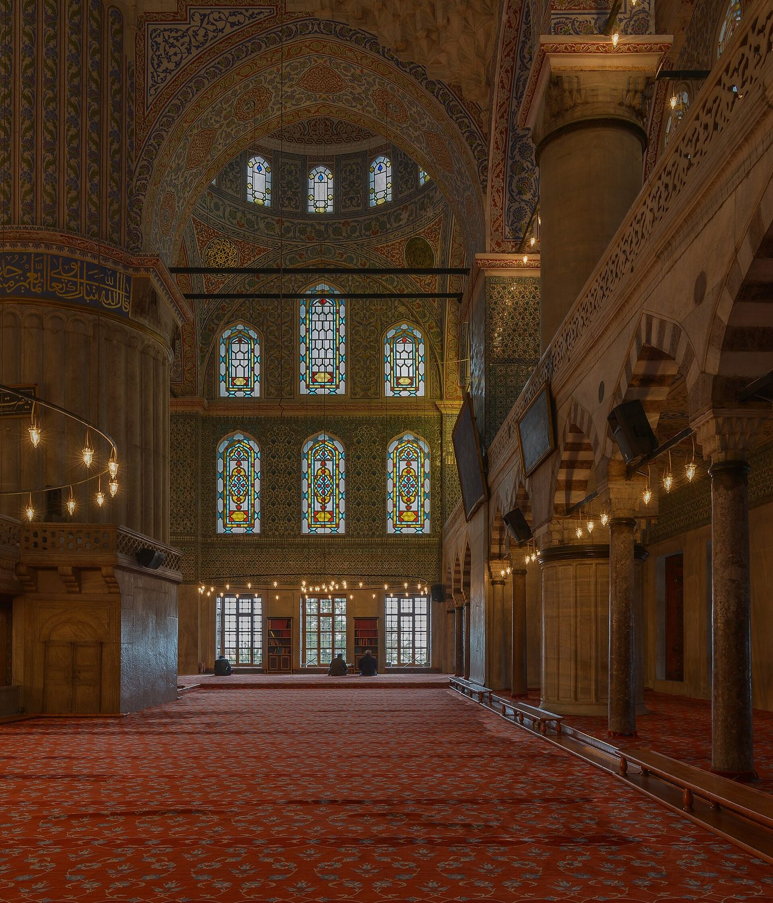
Hagia Sophia, the Blue Mosque, the Basilica Cistern, and Topkapı Palace — all within walking distance of each other in Sultanahmet.
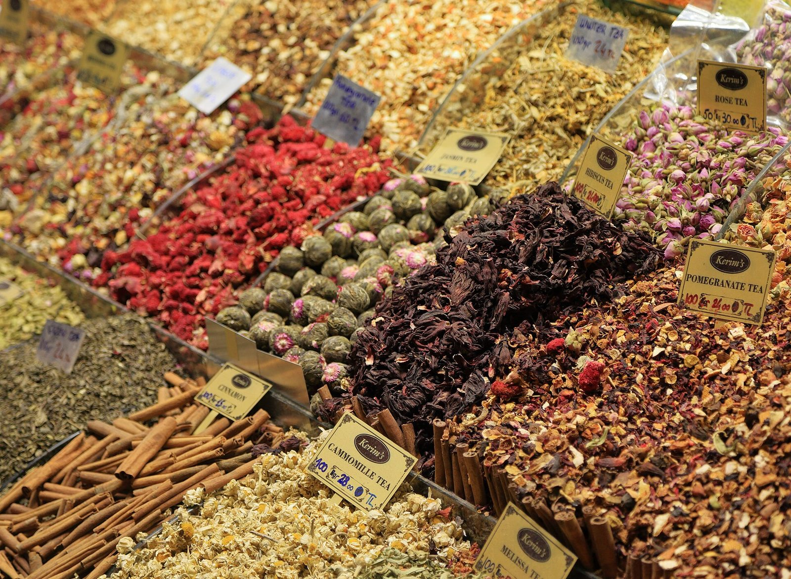
Grand Bazaar and the Spice Market by day, a sunset Bosphorus cruise from Eminönü in the evening.
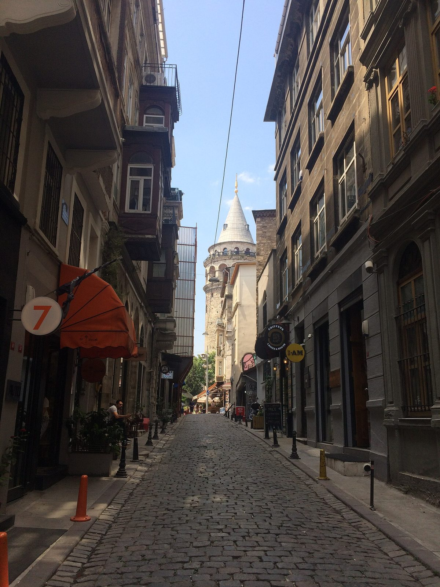
Wander Karaköy, up the Galata Tower, then the ferry across to Kadıköy on the Asian side. Finish with a hammam.
IST → JTR, unconfirmed schedule (see Flight Info). Settle into the caldera-view hotel in Imerovigli or Oia.
Swim stops at the volcanic hot springs, sail past the red and white beaches, sunset on the water.
Recommended: Caldera Yachting cruise ↗The caldera-rim trail from Fira to Oia, then Assyrtiko tastings with caldera views.
Official site: Santo Wines ↗Pool time, Perissa or Kamari's beaches, no plans. Sunset dinner to close out Santorini.
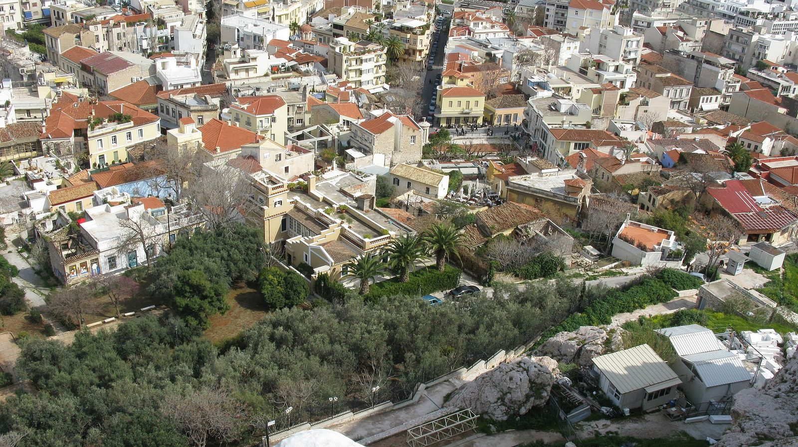
Morning transfer to Athens (mode TBD). Afternoon in Plaka and Anafiotika, rooftop dinner with an Acropolis view.
The Acropolis right at opening, before the heat and crowds build, then the Acropolis Museum. Afternoon in Monastiraki and Koukaki.
Official tickets: Acropolis ↗Slow morning near Syntagma — no airport hotel needed. Leave for ATH around 1:00p for the 4:20p nonstop home.
Restored Ottoman-era townhouse in Küçük Ayasofya — 5–9 minutes' walk to the Blue Mosque and Hagia Sophia, the value pick in the Old City.
A converted early-1900s prison right in the Old City — 65 rooms, rooftop lounge looking straight at Hagia Sophia and the Blue Mosque.
Imerovigli, on the caldera rim without the Oia price tag — the value pick in Santorini.
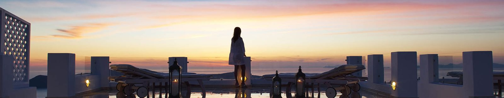
Highest point in Oia, private plunge pools, unobstructed caldera views — the marquee splurge that pushes this destination's budget rating around.
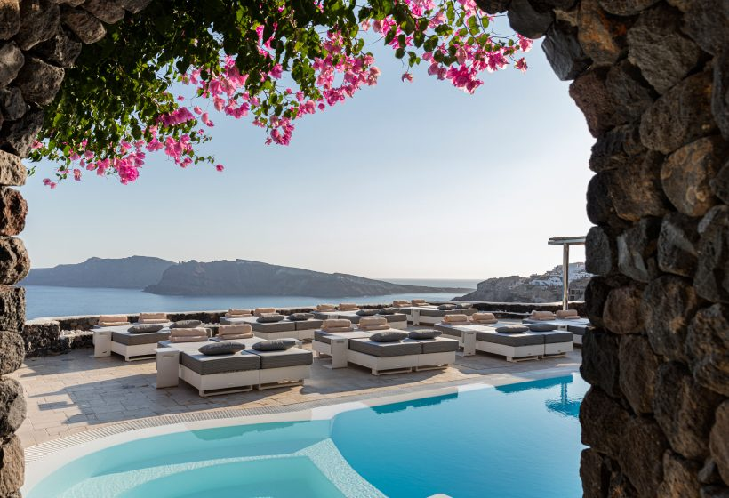
Steps from the Acropolis Museum and Plaka — small (21 rooms), well-reviewed, the value pick in Athens.
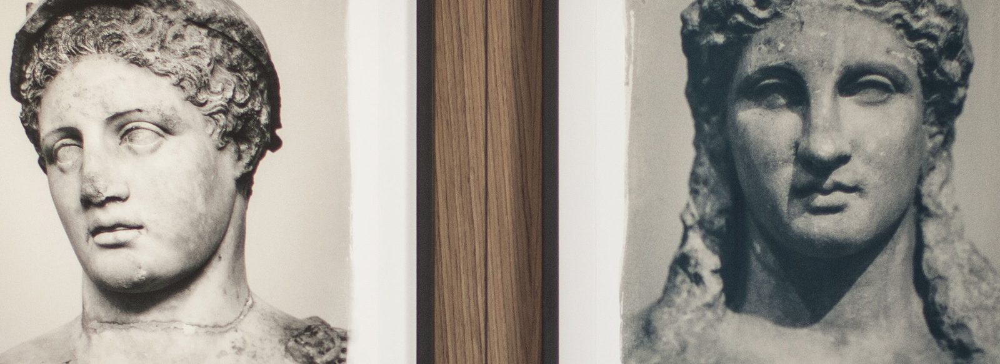
Athens landmark since 1874, on Constitution Square — some rooms and the rooftop restaurant look straight at the Acropolis.
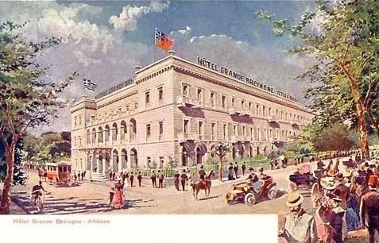